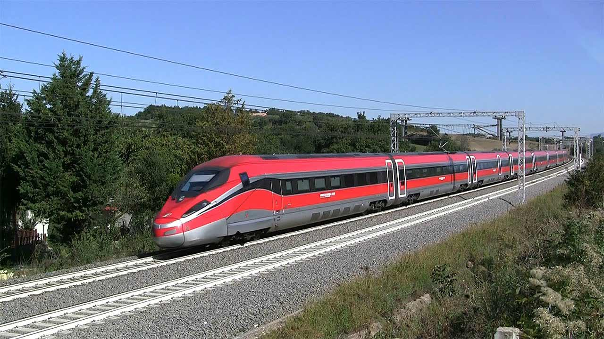

HOME
CHI SONO
IL MIO PAESE
SCUOLA
PASSIONI
TPSIT
LE MIE PASSIONI
Le mie passioni sono 2 e adesso vi dirò quali:
La mia prima passione e diventare un soccoritore Antincendio o Sanitario
La mia seconda passione sono le ferrovie, infatti dopo la squola mi piacerebbe frequentare il concorso di ferrovia.
